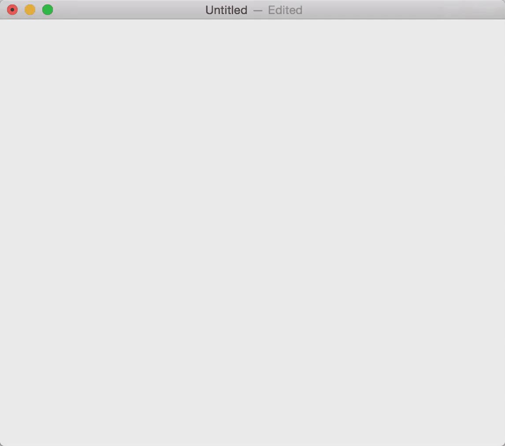
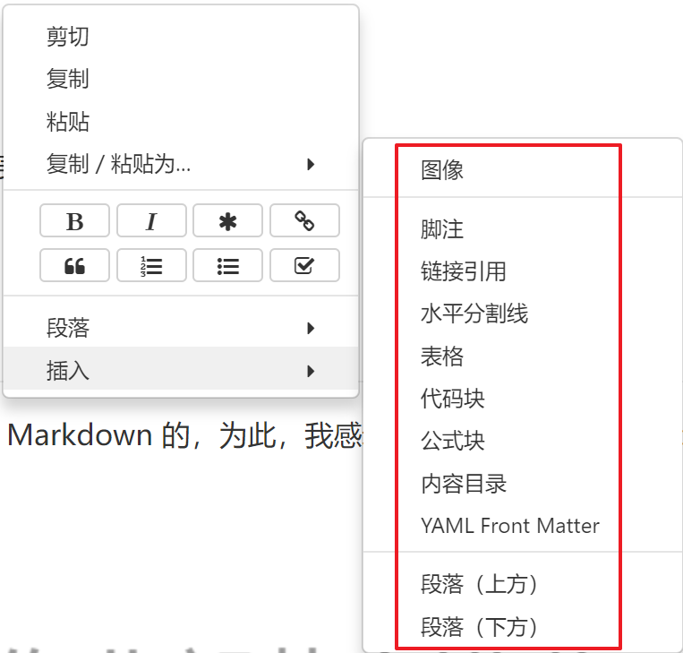
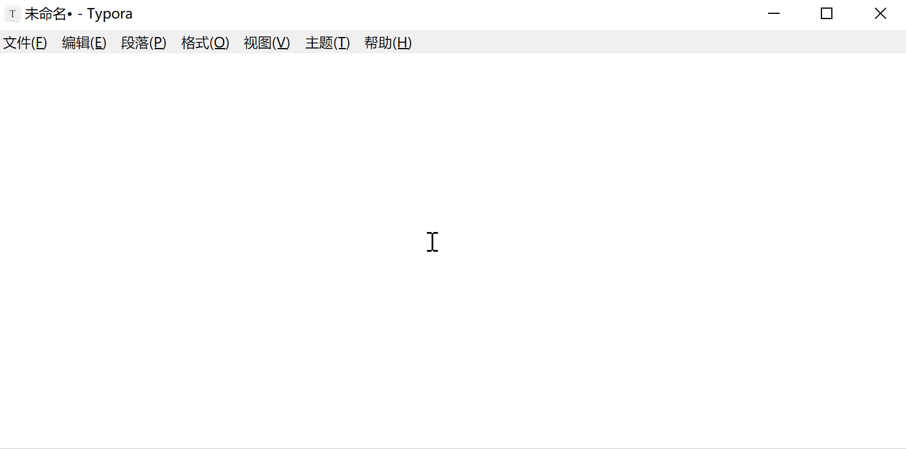
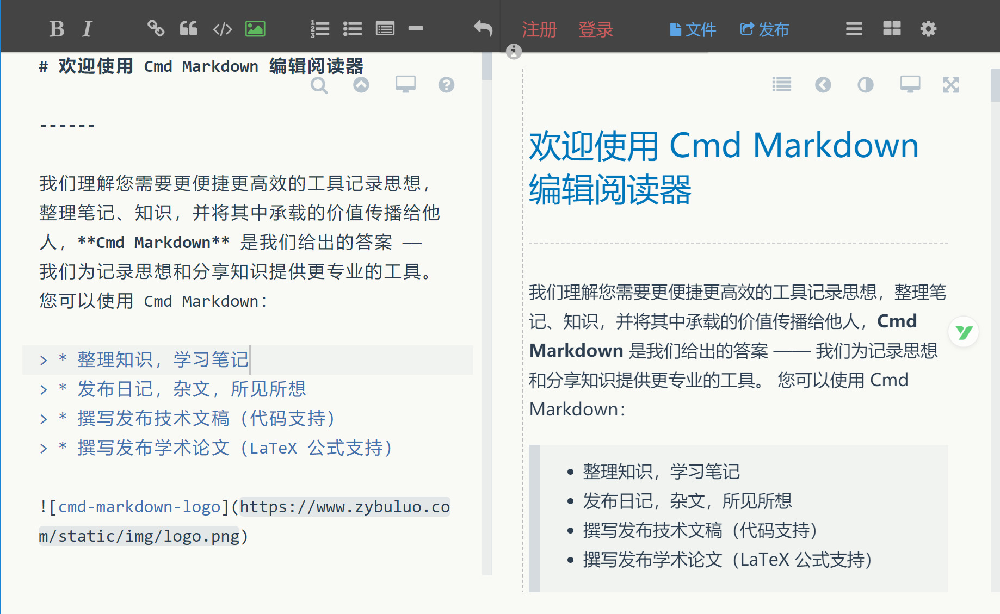
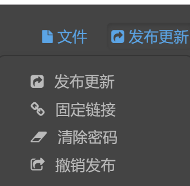
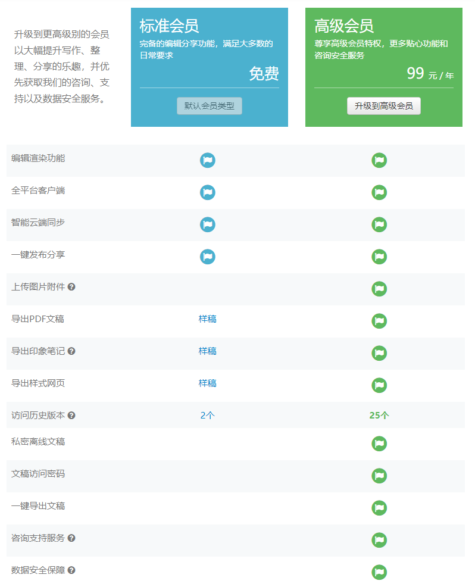
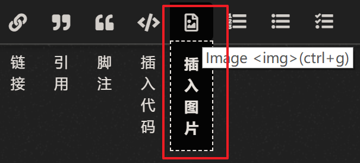
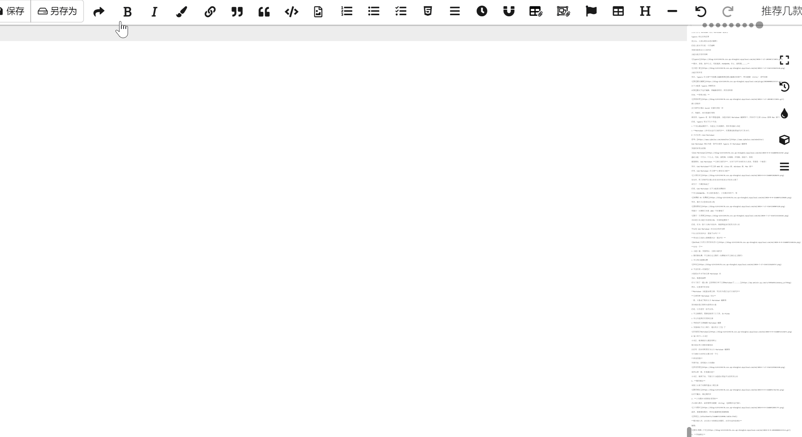
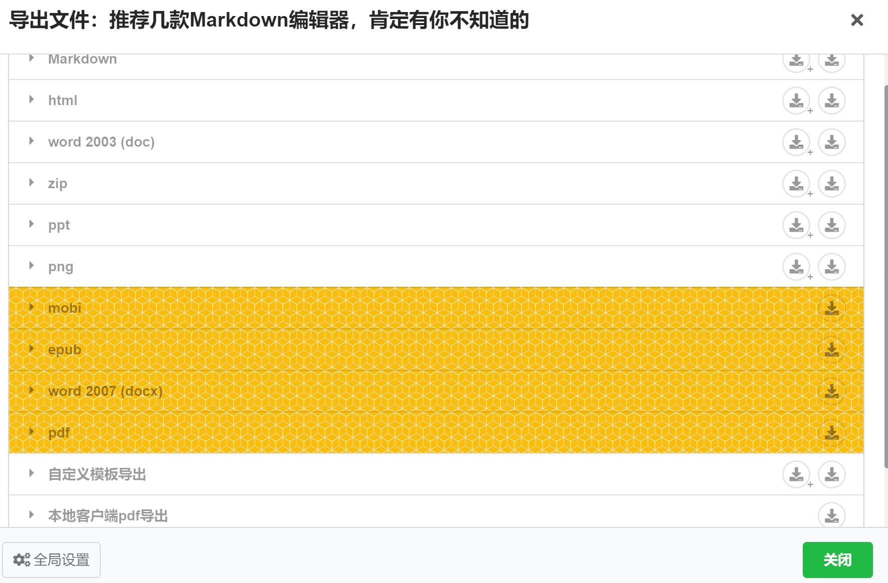

相信很多人都使用 Markdown 来编写文章，Markdown 语法简洁，使用起来很是方便，而且各大平台几乎都已支持 Markdown 语法
那么，如何选择一款趁手的 Markdown 编辑器，就是一个问题了，特别是对于我这样的强迫症来说。
市面上的各种 Markdown 编辑器，几乎都被我试用个遍，但是没有一款让我完全满意的，它们都各有优缺点。
我用过有道云笔记、为知笔记、Cmd Markdown、印象笔记、Typora、MarkdownPad、小书匠，等等。
强迫症的我，表示很纠结。
今天就给大家推荐几款我觉得还不错的 Markdown 编辑器，当然，还是 Windows 平台为例。
它们都涵盖了 Markdown 的基本功能，但是它们都各自有自己的亮点和不足。
Typora 是 Windows 端的 Markdown 新宠
若要人推荐 Windows 端的 Markdown 编辑器
Typora 肯定名列前茅
没办法，人家长得实在是好看啊！
但是人家也不只是一个花瓶啊
页面风格简洁大方的同时
功能也是应有尽有

图片、表格、数学公式、代码高亮、PDF&HTML 导出、流程图......

另外，Typora 还支持代码模式编辑和预览模式编辑的切换，用快捷键 Ctrl+/ 即可切换

这个功能是 Typora 所特有的
在预览模式下进行编辑，所编辑即所见、所见即所得
比如，表格功能：
插入表格后
完全就可以像在 Excel 中操作表格一样
行、列操作、单元格操作等等
很显然，Typora 是一款颜值超高，功能完备的 Markdown 编辑器，另外还支持 Linux 版和 Mac 版。
但是，Typora 有以下几个不足：
① 无法集成图床，只能先上传到图床，然后手动插入外链
② Markdown 文件无法进行云端同步，还需要借助其他同步工具才行。
官网：https://www.zybuluo.com/mdeditor
Cmd Markdown 我以为是一款可以媲美 Typora 的 Markdown 编辑器
页面同样简洁舒服

基础功能一个不少，公式、代码、流程图、甘特图、序列图、表格，等等
最重要的，Cmd Markdown 支持云端同步，这对于多平台写作的人来说，简直是一个福音！
另外，Cmd Markdown还支持 Web 版、Linux 版、Windows 版、Mac 版
Cmd Markdown 还支持文章发布功能

发布后，第三者就可以通过你发布的外链来访问你的文章了
相当于一个博客系统了
但是，Cmd Markdown 以下功能是收费的：
导出PDF&HTML、导出到印象笔记、上传图片附件等

而且，最近几次登录总是出现
而最近一次更新已经是 2017 年的事情了
也许是它的功能已经足够完备，无须其他更新了
但是，作为一款个人维护的软件，我使用起来还是有点担心的
不知道 Cmd Markdown 的未来会怎样发展
这么好的软件会一直做下去吗？
存放在云端的文章和图片会一直在吗？
总结一下
① 功能丰富、页面简洁、支持云端同步
② 图床要收费，不支持自定义图床（收费版也不支持自定义图床）
③ 导出等功能要收费
大象是去年才开始支持 Markdown 的
为此，我感动涕零
还专门写了一篇文章：没想到它终于支持Markdown了......
所以，这里就不再多说
Markdown 功能基本都支持，可以作为笔记进行云端同步
支持各种 Markdown 语法
一度，大象成了我的主力 Markdown 编辑器
因为我的笔记管理也是用的大象
但是，它还是有一些不完美：
① 不支持图床，需要借助第三方工具，如 PicGo
② 导出只能用打印变相支持
③ 手机端不支持编辑 Markdown 编辑
④ 页面相比于以上两个，着实有点『丑』了
小书匠，我想很多人都没有听过
我也是在网上搜索时看到的
以前有一段时间用其作为主力 Markdown 编辑器
今天就给小伙伴们主要介绍一下它
启动页面
不得不说，没有高大上的感觉
虽然长得一般，但是确实能干
小书匠，我用下来，下面几个功能是在其他平台没有见过的
1、图床绑定
市面上主流了的图床基本上都支持
这还不算完，绑定图床后
2、上传图片也变得非常简单
点击插入图片，或者使用快捷键 Ctrl+g 选择图片进行插入

或者，直接复制图片，然后在编辑器里直接粘贴
图片插入后，会自动上传到绑定的图床，并且生成外链地址
看图：
3、存储绑定
小书匠本身不支持云端同步，但是提供了绑定其他云端存储的功能
对一些主流云笔记和 Git 仓库都进行了支持
4、多平台支持
和 Cmd Markdown 一样，同样支持 Web 版、Linux 版、Windows 版、Mac 版
5、其他功能

6、导出
可选导出项非常之多
付费版竟然还支持导出为 epub 和 mobi 格式！

7、免费VS付费
小书匠免费功能已经很丰富了，但是同样提供付费版本
只要 20 元/年！反正我自己已经买了
好了，小书匠就介绍到这了
功能很丰富、很齐全
但是我也要挑挑骨头
① 页面没那么简洁好看
② 功能越丰富，配置就显得有点繁琐，这点是无可避免的，存在一定的使用学习成本
③ 要是支持自带云端同步就更好啦
总的来说，几个编辑器各有千秋，个人提供如下几个参考标准：
我现在的主流是小书匠+腾讯图床+坚果云同步
另外，今天介绍的几款在手机端表现都不怎样，手机端我一般用锤子便签
好了，今天就到这了